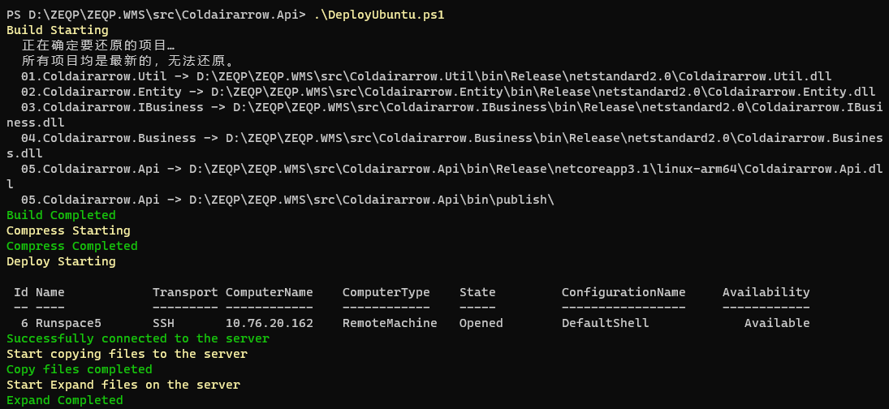
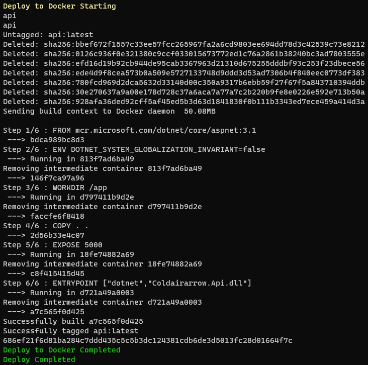
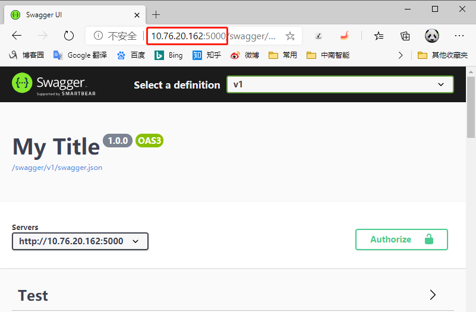

本文简介
最近在开发一个管理系统，代码框架是用的前后台分离的方式
后台使用的是Asp.Net Core平台，开发所有业务，向前台提供Rest API接口。
使用的认证方式是JWT
前端有两个项目，一个是Web端，一个是Mobile端
都是使用Vue + Ant Design of Vue架构
后端的开发工具使用的是Visual Studio 2019
前端的开发工具使用的是Visual Studio Code
在这前我也写过通过PowerShell自动部署Asp.Net Core程序到Windows服务器
并使用IIS向外提供服务。
使用PowerShell自动编译部署
为了使项目实现运行在全开源平台，实现低成本、安全、高可用的目的
所以写这个文章以实现自动部署系统至Ubuntu平台使用Docker对外提供服务
本文章只实现后端接口项目(Rest API)的部署
本文所有自动部署代码是基于PowerShell
实现目标
- 在Windows平台自动编译API接口
- 把编译生成的文件发布到Ubuntu服务器
- 在Ubuntu服务器使用Docker对外提供服务
前置条件
- Ubuntu服务器启用了SSH，并可以使用RSA Key登录root 参考文档：Ubuntu系统配置SSH服务
- Ubuntu服务器安装了PowerShell 参考文档：使用PowerShell操作Ubuntu
- Ubuntu服务器安装了Docker 参考文档：Ubuntu安装Docker
自动编译Asp.Net Core Web API接口
1
2
3
4
5
6
7
8
9
10
11
12
13
14
15
16
17
18
19
|
$CurPath=(Resolve-Path .).Path
$OutputPath=$CurPath+"\bin\publish\"
Remove-Item -Path $OutputPath -Force -Recurse
Invoke-Command -ScriptBlock {param($o) dotnet publish -o $o -c "Release" --no-self-contained -r linux-arm64 -v m --nologo "05.Coldairarrow.Api.csproj"} -ArgumentList $OutputPath
$CurDateString=Get-Date -Format "yyyyMMddHHmmss"
$ZIPFileName="Deploy"+$CurDateString+".zip"
$ZIPFilePath=$CurPath+"\"+$ZIPFileName
$CompressPath=$OutputPath+"*"
Compress-Archive -Path $CompressPath -DestinationPath $ZIPFilePath
|
把压缩后的编译文件发布到服务器
1
2
3
4
5
6
7
8
9
10
11
12
13
14
15
|
$Session = New-PSSession -HostName 10.76.20.162 -UserName root -KeyFilePath "C:\Users\Administrator\.ssh\id_rsa"
$RemotePath="/srv/Deploy/"
Copy-Item $ZIPFilePath -Destination $RemotePath -ToSession $Session
$RemoteDestinationPath=$RemotePath+"API/"
$RemoteZipPath=$RemotePath+$ZIPFileName
Invoke-Command -Session $Session -ScriptBlock {param($p) Remove-Item -Path $p -Recurse -Force} -ArgumentList $RemoteDestinationPath
Invoke-Command -Session $Session -ScriptBlock {param($p,$dp) Expand-Archive -Path $p -DestinationPath $dp} -ArgumentList $RemoteZipPath,$RemoteDestinationPath
Remove-Item -Path $ZIPFilePath
|

Docker对外提供服务
在程序部署目录配置Dockerfile
1
2
3
4
5
6
7
8
9
10
11
|
FROM mcr.microsoft.com/dotnet/core/aspnet:3.1
ENV DOTNET_SYSTEM_GLOBALIZATION_INVARIANT=false
WORKDIR /app
COPY . .
EXPOSE 5000
ENTRYPOINT ["dotnet","Coldairarrow.Api.dll"]
|
构建API镜像，并启动新容器
1
2
3
4
5
6
7
8
9
10
|
Invoke-Command -Session $Session -ScriptBlock {docker stop api}
Invoke-Command -Session $Session -ScriptBlock {docker rm api}
Invoke-Command -Session $Session -ScriptBlock {docker rmi api}
Invoke-Command -Session $Session -ScriptBlock {docker build -t api /srv/Deploy/API}
Invoke-Command -Session $Session -ScriptBlock {docker run -d -p 5000:5000 --name api api}
|

部署结果
部署成功后，我们在浏览器里打开
http://10.76.20.162:5000/swagger/
就可以看到我们发布的API接口

源代码
1
2
3
4
5
6
7
8
9
10
11
12
13
14
15
16
17
18
19
20
21
22
23
24
25
26
27
28
29
30
31
32
33
34
35
36
37
38
39
40
41
42
43
| Write-Host 'Build Starting' -ForegroundColor Yellow
$CurPath=(Resolve-Path .).Path
$OutputPath=$CurPath+"\bin\publish\"
Remove-Item -Path $OutputPath -Force -Recurse
Invoke-Command -ScriptBlock {param($o) dotnet publish -o $o -c "Release" --no-self-contained -r linux-arm64 -v m --nologo "05.Coldairarrow.Api.csproj"} -ArgumentList $OutputPath
Write-Host 'Build Completed' -ForegroundColor Green
Write-Host 'Compress Starting' -ForegroundColor Yellow
$CurDateString=Get-Date -Format "yyyyMMddHHmmss"
$ZIPFileName="Deploy"+$CurDateString+".zip"
$ZIPFilePath=$CurPath+"\"+$ZIPFileName
$CompressPath=$OutputPath+"*"
Compress-Archive -Path $CompressPath -DestinationPath $ZIPFilePath
Write-Host 'Compress Completed' -ForegroundColor Green
Write-Host 'Deploy Starting' -ForegroundColor Yellow
$Session = New-PSSession -HostName 10.76.20.162 -UserName root -KeyFilePath "C:\Users\Administrator\.ssh\id_rsa"
$Session
Write-Host 'Successfully connected to the server' -ForegroundColor Green
Write-Host 'Start copying files to the server' -ForegroundColor Yellow
$RemotePath="/srv/Deploy/"
Copy-Item $ZIPFilePath -Destination $RemotePath -ToSession $Session
Write-Host 'Copy files completed' -ForegroundColor Green
Write-Host 'Start Expand files on the server' -ForegroundColor Yellow
$RemoteDestinationPath=$RemotePath+"API/"
$RemoteZipPath=$RemotePath+$ZIPFileName
Invoke-Command -Session $Session -ScriptBlock {param($p) Remove-Item -Path $p -Recurse -Force} -ArgumentList $RemoteDestinationPath
Invoke-Command -Session $Session -ScriptBlock {param($p,$dp) Expand-Archive -Path $p -DestinationPath $dp} -ArgumentList $RemoteZipPath,$RemoteDestinationPath
$ConfigProductionFile=$RemoteDestinationPath+"appsettings.Production.json"
Invoke-Command -Session $Session -ScriptBlock {param($p) Remove-Item -Path $p -Force} -ArgumentList $ConfigProductionFile
Write-Host 'Expand Completed' -ForegroundColor Green
Write-Host 'Deploy to Docker Starting' -ForegroundColor Yellow
Invoke-Command -Session $Session -ScriptBlock {docker stop api}
Invoke-Command -Session $Session -ScriptBlock {docker rm api}
Invoke-Command -Session $Session -ScriptBlock {docker rmi api}
Invoke-Command -Session $Session -ScriptBlock {docker build -t api /srv/Deploy/API}
Invoke-Command -Session $Session -ScriptBlock {docker run -d -p 5000:5000 --name api api}
Write-Host 'Deploy to Docker Completed' -ForegroundColor Green
Remove-Item -Path $ZIPFilePath
Write-Host 'Deploy Completed' -ForegroundColor Green
|